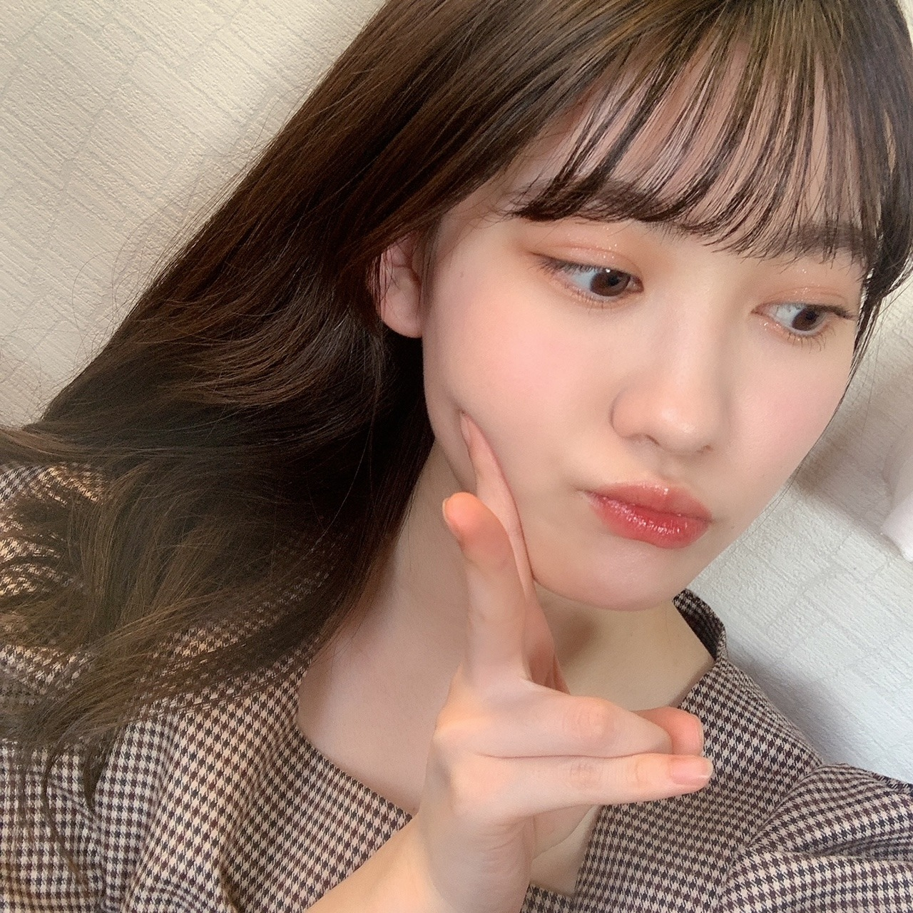

2020/1221Mon1つ 松尾美佑
私が今立っている場所から見える空は
雲がひとつも無いです
すっごく綺麗な水色です
今日も太陽と共にご機嫌な松尾美佑です
アンダーライブ2020、お疲れ様でした！
3日間、有観客と配信という形で本当にお疲れ様でした！
実は私も見に行かせて頂きました¨̮
感染症対策の為に会場では声を出さないで見るという新鮮な形で、
その代わり叫びたい気持ちをスティックバルーンに込めて沢山ポンポンとしていました！
本っ当にかっこよくて、輝いていて、
この気持ちをどの言葉で伝えたら良いのか、
そもそもこの気持ちを全て伝えられるような言葉がこの世にあるのかがちょっとよく分からないのですが、
本当に眩しくて、瞬きが出来なかったです。
かっこいい曲と明るい曲の表情や表現の差も、
本当に同じ方々なのかと不思議に思ってしまうくらいガラッと空気ごと変わって心臓が追いつかなかったです。
何よりも先輩方の仲の良さに元気を貰って、
そして会場全体の一体感を全身で感じて心がギュ〜っとして暖かい空間に包まれました。
アンコールの時に、皆さん声を出せないので
のーぎざか フォーティーシックス
のリズムでスティックバルーンを叩いていて、その音が揃っていて、
本当にその温かさに感動して、なんて素敵なんだろうと気持ちが溢れました。
そのアンコールの時に
客席でサイリウムでハートをかいている方がいらっしゃって、
反対側の客席でそれを見て同じくサイリウムでハートをかいて応えてる方がいらっしゃって、
それを見てハートをかく方が次々増えていて、
本当に皆さんの温かさに心の底から幸せを貰いました。
素敵過ぎる空間にいれたこと、
そんな温かさを作った先輩方、
全てが大切で宝物に思いました。
先輩方、皆さん、幸せな忘れられない時間をありがとうございました！！
私はスティックバルーンを沢山叩いたら片方萎んでしまいました。
今イヤホンで
『ここにいる理由』が流れてますˊᵕˋ

題名:きらきらしたかった日。
あ、最近
幸阪に会いました〜
幸阪茉里乃〜
5億年ぶりくらいな感覚です。
お誕生日おめでとうも伝えられました！！
あとぱるにも会えました〜
あ！！あと
守屋麗奈にも会えました〜！
べびちゃんがお姉さんオーラ出しててびっくりしちゃいました。
みんな可愛すぎて震えました。
明日は〜
なお〜〜〜〜〜〜〜〜〜〜
"と" にちっちゃい "ゆ" は日本語か？と聞かれました。
とゅーーーー
も日本語だよ多分
( ㆀ)( ㆀ)( ㆀ)
次の私のブログの日にはもうクリスマスは終わってるらしい。
あ、皆さんちゃんとサンタさん追跡してますか？
家を通過したら教えてください
❆ ☺︎ ٩
↑季節のご挨拶 (妖精語)
ミュウでした¨̮


ばいっっっっっっ( Ꙭ )/''

PROFILE
新4期生リレー
202104
| SUN | MON | TUE | WED | THU | FRI | SAT |
|---|---|---|---|---|---|---|
| 1 | 2 | 3 | ||||
| 4 | 5 | 6 | 7 | 8 | 9 | 10 |
| 11 | 12 | 13 | 14 | 15 | 16 | 17 |
| 18 | 19 | 20 | 21 | 22 | 23 | 24 |
| 25 | 26 | 27 | 28 | 29 | 30 | |

コメント(163)
今日はやや早コメです。
まずはブログ更新ありがとう！
今回はアンダーライブについて熱く書いてくれていますが、これについてはまた改めてコメします。
今日は『CDTVライブ！ライブ！』クリスマススペシャルについて書きますね！
乃木坂46の2020年カラオケTOP10・乃木坂46×日向坂46『スペシャルコラボメドレー』、乃木坂と日向坂のメンバーが乃木坂46のヒット曲10曲をメドレーする圧巻の企画、素晴らしかったですね！
乃木坂メンバーのパホーマンスはもちろんですが、日向坂の皆んなも乃木坂46の曲の振りをしっかりパホーマンスしてくれていて、すごいコラボだったです。
ミュウちゃんが最近合った日向坂46のぱるちゃんも頑張っていましたよ！
日向坂46のターン『ソンナコトナイヨ』では高橋未来虹ちゃんが2列目で頑張ってましたね！
そして櫻坂46がテレビ初披露してくれた『なぜ恋をしてこなかったんだろう？』では幸阪茉里乃ちゃんと増本綺良ちゃんが頑張ってましたよ！
こうして坂道研修生の活躍を見ると嬉しくなりますね！
ミュウちゃんも刺激になってるんじゃないですか？
乃木坂46は他グループに比べてメンバー数が多いので、他のグループと比較はできませんが、ミュウちゃんがテレビでパホーマンスする姿を早く見たいと思います。
そのために、しっかりと応援していきますね！
それではまたコメントするね。
ミュウちゃんにとって明日がいい日になりますように！ (^.^)/~~~
ということで改めまして松尾さん、こんばんは。『乃木坂工事中』での領収書事件、「尾っぽの尾」が「《おっと》の夫」に聞こえてしまうのが原因なのでしょう。
これからはちょっとアカデミックに「松尾芭蕉の松尾です」と言ってみてはいかがでしょう。他にも松尾姓の有名人のお名前を出してみるのも方法ですね。
さてさて、三日間に及ぶアンダーライブが無事おひらきとなりました。久しぶりの有観客ライブ。声援の代わりにスティックバルーンを使っての応援でメンバーにエールが届いていると嬉しいな。アンコールの「のーぎざか、フォーティーシックス！」もバルーンで表現できることがわかった今回のライブ。感動的な時間でありました。
松尾さんも現地でライブの感動に触れたのですね。片方萎んでしまうくらいバルーンをせいいっぱい使っての応援、きっと14人の先輩たちの許に届いたことでしょう。応援お疲れさまでした〜。
♪日曜日に市場へ出かけ糸と麻を買ってきた、で知られる民謡『一週間』の続きは「テュリャテュリャテュリャテュリャテュリャテュリャリャ」でしたよね。この曲はロシア民謡らしいので、テュすなわち「てゅ」はロシア語なのかもしれません。弓木さんに教えてあげましょう。
ではまたコメント寄せます。今週も元気にがんばりましょう。
さらばだ、また会おう！（気球に乗って去りぬ〜）
アンダーライブ観に行ってたんだぁ。
いろいろ話を聞いちゃうと観たかったなぁ。
「題名：きらきらしたかった日」ってミュウちゃんいつもきらきらしてるから大丈夫！！
最近、幸阪さん達に会ったんだね。
グループの垣根を越えての同期ってのもいいですね。
坂道合同の良さのひとつ！
だから、ミュウちゃんサンタさん追跡ってｗ
サンタさんトナカイと空飛ぶから追跡できねぇ～
家を通過したら教えたいけど、どうやって教えるんだ～い！（テレパシーとか出来たらなぁ）ｗ
妖精語かぁ。季節のご挨拶って。わかんね～
ミュウちゃんアイドルの妖精だったのかぁ。
って。おい！
ミュウちゃんめちゃボケをかましてくるよね～
ブログ更新ありがとうございます。
アンダラの会場からの感動の報告、ありがとうございます。先輩方のアンダラに賭ける熱い思い、そして「有観客」を実行させるための細かい配慮と対策、「声を出さず」に応援するためのスティックバルーン、たくさんのことを教えてもらったライブでしたね。「即中止」と言われて何もおかしくない状況の中で、無事にライブが「成功」を収め、たくさんの感動を与えてもらえたこと、本当にうれしく思います。そしてメンバーはもちろん、スタッフさんをはじめ関係者のみなさんに感謝の気持ちでいっぱいです。
私は４期生ライブに続き、「配信」でその感動を共感することが出来ましたが、やはり会場にいたミュウちゃんはさらなる感動が‥‥ですね。カッコよさ・まぶしさいろいろなものが伝わってきますが、スティックバルーンの片方から、ミュウちゃんの力の入った応援ぶりが伝わってきます。「どの言葉で伝えたら」と言いながら、さりげない表現の中にミュウちゃんの思いも伝わって来て、配信を思い出しながら、感動し直している自分がいます。ミュウちゃん、報告ありがとうございます。
そして、幸阪茉里乃ちゃんらにお会いできたとのこと、何よりです。ミュウちゃんがそのまま４期生として加入していたら、味わうことのなかった経験を通して出会うことができた「坂道研修生」の仲間。これは新四期生だけが持っている特権、そして財産。これからもこの「絆」を大切に３つの坂の架け橋としてもご活躍くださいね。
ブログ更新ありがとう。
僕は最終日だけだけどアンダーライブ2020を配信で観たよ。
最初からずっと感動しっぱなしだった！
ほぼノンストップのパフォーマンスは圧巻だったね！
ミュウちゃんの話を聞くと、やっぱり会場で生の空気感や臨場感を味わいたいと思ったよ。
スティックバルーンでの応援もしたかったなぁ。
次はあるとしたらバスラかな？
どうなるか分からないけど、もしバスラが有観客で開催されるとしたら、絶対会場でミュウちゃんの応援をしたいと思う！
了解しました！
もしサンタさんが家を通過したら教えます！笑
それじゃ、またねー。
おつおつー！
ブログ更新ありがとう！
乃木中のこと話させて！
領収書事件見たよー！
〈松夫〉って、違うって思わないのかなww
尾っぽの尾って言われたら分かるような気がするけどねww
普通にこれからもそのセリフ使っていいと思うよ。
絶対99%通じるしw
またブログ更新待ってます！！
大好き
ひろと
美佑ちゃんと同じ高校2年生の愛知の覇王です！
さくらちゃんとあやめちゃんと楓さんと同じ愛知県出身だよ！
美佑ちゃんの2枚目の写真、めっちゃ可愛いよ！
おでこだしていて、すごい大人っぽくて、めちゃくちゃ良いよ！
体調を崩さないように気をつけてね！
これからもずっと応援するので頑張ってください！
生え際の産毛が好き
ブログ更新ありがとー！
アンダーライブ見に行ったんだ！
いいなー！
乃木坂の仲の良さって本当に素敵だよね
みゆちゃんもその中に混じってワイワイしている姿が早く見たいなー！
体には気をつけてね
応援してるよー
たまたま4期ライブを見ていて、この子誰！？かわいい！ってなったのがみゆちゃんでした！！同い年でびっくりした！大人っぽい！かわいい！
今度のミーグリも当たったから楽しみ！
またコメントするね！
アンダーライブ観に行ったんやね！
俺は3日目だけ配信で見たよ！今でも興奮冷めやらぬ感じで、とにかく楽しかった。。メンバー皆が楽しそうなのを見て本当に微笑ましかった！楽しすぎただけに今日の平凡な1日が暇だったけどね笑4期生ライブは見れなかったからミュウちゃんが出るライブも早くみたいな！笑
あ、そーいえば矢久保ちゃんがのぎおびで、4期生ライブの時にミュウちゃんが隣で小さいっていじってくるって言ってたよ笑
4期生同士もどんどん仲良くなってるみたいで、なんか話聞いただけで嬉しかったな笑
乃木坂工事中映ってたね！そんなに尺は長くなかったけど、乃木中でまたバナナマンさんとの絡みが見れて良かった！
ミュウちゃんのおばあちゃんもまた乃木坂工事中でミュウちゃんを見れて喜んでたんじゃないかな？笑
質問
そもそもサンタさんて妖精なの？ドドン(核心をつく音)！
次のブログの時にはクリスマス終わってるんだね〜
てか、それより31日ミュウちゃんの番だよね！
今年はミュウちゃんのブログで1年を締められる！笑
では、次のブログも楽しみにしてるね！
じゃ、また (`ω´*)
でこ出し可愛い
スティックバルーンが萎んじゃうってどんだけ叩いてたの？
『質問』
とゅーーーってどう発音するんでしょう？
ミュウちゃんがアンダー楽曲で一番好きな曲は？
待ってました
毎週乃木坂スキッツ見てます
かわゆい
また４期生ライブやってね
こんどは武道館で
ノギザカスキッツACT2#7&ノギスキマチソワカン#7視聴いたしました。
第3弾のかつ屋☆赤色チェック柄のサンタさん風ミュウミュウお綺麗やわぁ[壁]ｴ＿)逆ﾁﾗﾘ♡お隣のおしゃれなお姉さまカツ‼ぷらーばですわおほほほほ(o^∀^)
奇跡のクリスマスカツ♡ピリ辛カツツンデレメリクリ♡サンタクロースカツ♡何であのときカツ♡感動ぽっぽぽー壁]ω･U ﾆｬ♡
乃木坂工事中‼B級ニュース2020後編視聴いたしました。時々天使松尾美佑殿様発見ﾜﾝ (･x･U)≡≡≡３
お鞄お洋服コーデ救われるトーク感動ぽっぽぽー壁]ω･U ﾆｬ♡
お声トニカクカワイイおでこったん♡ミュウミュウだいすこ壁|ω-o)ﾟ+. ﾎﾟｯ ♡
アンダーライブ2020おっポよ。滑走路♡君が扇いでくれた♡なみころ♡自由の彼方♡誰そば♡好き好きピーナッツ(ｏ￣∀￣)ﾉ”ぁぃ
ハピバお誕生日18歳のユリべニッチェガムチョットル幸阪茉里乃殿♡カルバッチョプルポポイガぱるる殿♡や～れんさんおめでとうございます壁|▽//)ゝﾃﾚﾃﾚ
お口元シリーズミュウミュウきゃわわうれぴーぽーo(￣◎￣)o ﾊﾞﾌﾞｩ♡
ほんじつもかつ丼パワー100万馬力でばいころまる( ;-(ｴ)-)ゞｸﾏ
ノギザカスキッツACT２、僕の住む北海道は放送されないので、動画サイトで見たよ。４期生コント、かつ家 クリスマスSP、めっちゃおもしろかったです。
ミュウちゃんの、隣のおしゃれなお姉さんかつ、めっちゃよかったよ。
ミュウちゃん、めっちゃ綺麗で、めっちゃかわいかったです。
１枚目の写真のミュウちゃん、めっちゃかわいいです。
ミュウちゃん、体調に気をつけてね。
またコメントするね。
イェーイv(・∀・*)
イェーイv(・∀・*)
またコメント遅くなっちった...(^-^)
空青かったの...青すぎてターコイズブルーにみえてたりして...(^-^)
俺も土曜日のだけ配信でみてた！
コロナかで無事出来たのがなによりで配信でみれたのがよかった!!
凄いね、幸せな気持ちになるね！
ミュウちゃんの青い空はきっと皆と繋がっているよ。
サンタクロースの出発地はきっと
冬のマザー牧場だよ。
沢山の乃木坂ちゃんたちの笑顔を乗せて
トナカイの代わりに与田ちゃんのごんぞうが
ソリをひいてるかもね。
オッハーーー！
ブログありがとぅー！
1枚目の写真めちゃ可愛いよー
今朝も寒々だよー
暖かいの恋しいよー
テンション上げて頑張るぞーー！！
妖精語？！？！ マゥはやっぱり妖精だったのね！！
アンダラめちゃくちゃ楽しかった！アフター配信のわちゃわちゃが最高すぎた！
5億年ぶりに会ったということはそれほど濃ゆい時間を過ごせてるようでなんだかこっちも5億年経ってる気持ちになたよ。
実際に会いたいけどあと5億光年は先になるのかな？
でもきっと一瞬だよね！感じ方次第だよね！
てことで、明日会える！そんな気がしてる。毎日明日会えると信じてる。
ミーグリでひとまずは話せる！その時に5億光年が1億光年になるぐらいには実際に会った気持ちで話そう！
ほなまた！
ジャンケンポイ
あっち向いて
今から。
ホントの気持ち伝える。
好きだよ。
こんばんは。
パンプキンポンプキン(恋)
です。
愛してるゲームに似ていますが
まず
ジャンケンをします。
勝った方が
「あっち向いて。今から。本当の気持ち伝える。好き。」
と、言います(迫真の演技で)
照れたら負けです。
笑っても。
耐えたらまたジャンケン
して勝った方がセリフ
を言います。
そんなゲームを発明したの
ですが是非乃木坂の皆さん
で行ってみてください。
流行ると思います。
おでこ出しの髪型が大好き
なんです。
今日も見れて嬉しいです。
かきあげ風バング
大好きなんですよね。
前髪を上げてラフに片方に
髪を持ってきて七三くらい
の割合にする髪型は
大人の女性といった印象を
強く受けます。
ドキっとします。
美佑さんおでこ出し似合う
のでガバッとかきあげて
じっと見つめられたら
heart melter.
四期生ライブの時に
お団子ヘアのリクエスト
が清宮レイさんから
あったんですよね？
見てみたかったです。
良かったらブログに
アップしてください:)
サンタさん追っかけるので。
パンプキンポンプキンは
心の綺麗な人にしか見え
ないんですよね。
クリスマスの日には私も
子供達にプレゼントを
配ってまわるんです。
ミュウちゃんには私の
姿が見えるかな？
お団子ヘアのクリスマスプレゼント
1日遅れになるけどくれたら
お菓子が湧き出てくる
湖に連れてってあげる:-x
満足した心が顔つきから伝わってくるよ。
これからも一緒に頑張っていこうな(つ≧▽≦)つ
櫻ちゃんでは新2期のべびちゃんと晶保ちゃんが特に推しメンです！
またいつかべびちゃんとみゅうちゃんの2ショットとか楽しみに待ってるね
今回、視聴も参戦も出来なかったけど、素敵な空間が、目に見える様でした。
早く普通にライブが行われる世界になると良いな。
その時は、ステージのミュウちゃんに大きな声で声援を送ります。
じゃ、またね。
ブログ更新してくれてありがとじゃ（モフ）
ワシもみゆ殿のブログを見てるのじょ（モフフ）
ワシもアイドルのブログを見ると思ったんじゃがその人らしい言葉があるのじゃ（モフフフ）
ワシもあなたのブログ見てるじゃら元気にしておくれじゃ（モフフフフ）
〜質問じゃ〜
①ワシだけに教えてくれじゃ、公式ブログの書き方を教えてくれじゃ、公式ブログはどうやって書いてるんじゃ？
②アイドルになって良かったと思ってるんじゃ？
またじゃ
このブログに陽世ちゃんとか会ったって書いてあったけど仲良いのかな？？山口陽世ちゃんも可愛くて好きだよ〜！ちょくちょく会えなくて寂しいね
昨日のCDTVライブライブ見たよ〜！！
カラオケランキングでIsee入ってたね！あの曲ほんと良い曲！！
ライブで見たいよ〜四期生の曲好きすぎる〜！
美佑ちゃんはカラオケ行くの？？乃木坂歌うことある？？絶対歌う曲あったら教えてね！！
それでは〜おもちより
太陽とご機嫌な写真が可愛い！
空気が澄んでいると空が高く見えて
ハッピーな気持ちになるね。
アンダーライブは会場で参加したんだね。
僕は配信で参加したよ！
熱のある本当にすごいライブだった。
伝説のライブになると思う！
生で空気を感じられてよかったねヽ(^0^)ノ
スティックバルーンをバンバンやりたかったな〜
今できる最高のライブの形だね。
ミュウちゃんのパフォーマンスを観られる日も
楽しみにしてるよ〜四期生ライブが終わってロス気味。
わかる〜「ここにいる理由」は脳内リピートしがち。
ぴょんぴょん跳ねる所が好きだな〜
きらきらしたかった日のアクセサリーは
大人っぽさが増して素敵。
また新しいミュウちゃんが観られた♪
クリスマスまであと少し。
サンタ追跡しなきゃ (・д・)ｼﾞｰｯ
とゅ－－－－と同じく、んぃ－－－－も日本語やで！
読めるやろ♪
ブログ更新ありがとう〜
お久しぶりのコメントです(｡-_-｡)
どーも、お外がめちゃくちゃ寒くなってきて
携帯用カイロが手放せなくなってしまったかぐやです！
あ、このコメントの最初の挨拶でも書いてありますが
最近ミュウちゃんの事を
家族や友達などの前で｢美佑さん｣と呼んでいることが多いので
これから｢美佑さん｣という呼び方でいかせて頂きます(ง ꙭ)ง
✂︎- - - - - - - -ｷﾘｶｴ- - - - - - - - - -
昨日の乃木中に美佑さん出てましたね！
ちゃんとリアタイで見ていましたよ〜( *`･ω･)
美佑さんの苗字を｢松夫｣と間違えられたのは
多分、説明した時の｢尾っぽの尾｣が
｢夫の夫｣に聞こえてしまったから
なのかもしれませんね…(￣▽￣;)ﾊﾊ……
✂︎- - - - - - - -ｷﾘｶｴ- - - - - - - - - -
今回のブログの写真の話になりますが、
どの写真も
メイクめっちゃ綺麗すね…
どんなメイク道具使ってるのか気になるな〜
それでは！
美佑さんに沢山の幸せが訪れますように☆*。
ばいっっっっっっ！！( Ꙭ )/''
かぐやより。
サイリウムでハート書いてたんだね、すごくいいね、参加したかったなー(>_<)
今日8thバスラ のブルーレイ届きました！
5人の初々しい自己紹介可愛いかった！
弓木ちゃんのMC当日聞いたって特典映像で観てビックリでした！
みんなのこの短期間での成長ぶりにあらためてすごい頑張ったんだなと思いました！
これからももっと素晴らしいグループにしたいってね！
やっぱりミュウさんのブログ大好きです。
ありがとう(^^)
喜章（よしあき）
とゅ？
とぅって読むのかなぁ？
そうだね。
日本語だね。
…多分。
ーーーー
自分もアンダラ現地で見てたけどいい空間だったよね。
今年は来るでしょうか(*´Д｀*)
アンダラ、自分も行きました！
やはりアンダラのパワーは半端ないっすね。
バスラはリアルで開催できるでしょうか。
近いうちにミュウちゃんのライブパフォーマンスを生で見られる日が来ることを祈っております(^^)
P.S.
ちゃんときらきらしてるから大丈夫だよ笑
アンダラ自分は残念ながら見ることができなかったよ…(TT)
見たかったな…
美佑ちゃん乃木中の領収書事件の松竹梅の松に尾っぽの尾って言って間違いられるってことだけどおっぽがおっとに聞こえちゃってる可能性高いと思ったよ(笑)
なんか他に分かりやすいのないかな〜って考えたけど
普通に松尾芭蕉の松尾で伝わるし分かりそうじゃない？(笑)
もし良かったら使ってみてね〜( ॑꒳ ॑ )
ではでは〜おやすミュウ⊂( ⊂ _ω_ )⊃
空も素敵だし
なにより君が素敵だよ！
アンダーライブでの想い伝えてくれて嬉しかったよ♪
自分も早くライブ会場でミュウちゃんのパフォーマンス観たいなって祈ってるから、来年は願い叶うと嬉しいね◎
乃木坂スキッツでの隣のお姉さんは綺麗だったな♪
高校生なのに大学生っぽい役を違和感なくこなせるミュウちゃんの演技と大人っぽさに感動したよ！
早くミュウちゃんに会えること願ってクリスマス過ごすから、ミュウちゃんは楽しんでね！
今日は朝コメです。
ノギザカスキッツ「かつ屋クリスマス」見ました！
待ちに待ったミュウちゃんの登場
『隣りのオシャレなお姉さんかつ』最高だったよ！
ゆるふわ巻き巻きヘアで、クリスマスらしい赤と白の洋服にベージュで揃えたベレー帽とブーツ、
暖簾を開けてこっちをちらっと見たとき、目線が合ったような気がしてドキっとしたよ！
“みゆ姉”を演じるときのミュウちゃんは何か大人びて見えて、不思議な感覚になりました。
始めはニコニコのミュウスマイルだったのが、「それでね…」からの幼い頃の話をするシーンから少し表情を暗めに変えて、「みゆ姉、ずっと楽しみに待ってるんだから」からの迫力あるかつを入れるミュウちゃんの演技に圧倒されてしまいました。
“ブクロちゃん”だけじゃなく自分も泣きそうになりました。
最高の“かつ”をありがとうです。
それではまたコメントするね。
ミュウちゃんにとって今日がいい日になりますように！ (^.^)/~~~
オッハーーー！
今朝は少しだけ寒くないかも
寒さが逃げてくれるといいね！
スキッツのミュウ姉見たよー
お姉さん感いっぱいだったよー
この次はいつかな〜
テンション上げて頑張るぞーー！！
年上の役もできるのはさすがです！笑
もっといろんな役みれるのを楽しみにしてます！
他にも乃木坂工事中とかでも体動かす企画とか
はやくやってほしいですね！
美佑ちゃんらしく頑張ってください！ずっと応援してますねーー！
度合いが図れそうな(笑)
配信見てたから声だして一緒に歌ってましたが
どっちも楽しいね(*^^*)
コメントする